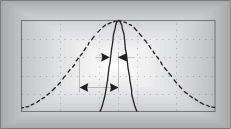
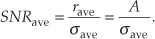
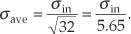
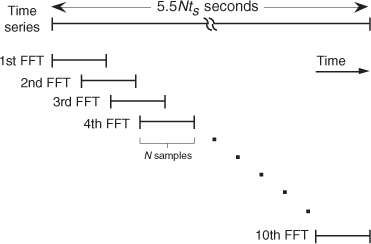
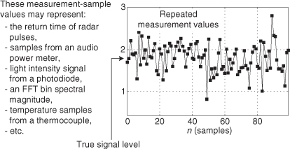
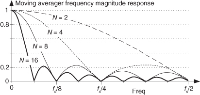
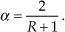

11 Signal Averaging

How do we determine the typical amount, a valid estimate, or the true value of some measured parameter? In the physical world, it’s not so easy to do because unwanted random disturbances contaminate our measurements. These disturbances are due to both the nature of the variable being measured and the fallibility of our measuring devices. Each time we try to accurately measure some physical quantity, we’ll get a slightly different value. Those unwanted fluctuations in a measured value are called noise, and digital signal processing practitioners have learned to minimize noise through the process of averaging. In the literature, we can see not only how averaging is used to improve measurement accuracy, but that averaging also shows up in signal detection algorithms as well as in lowpass filter schemes. This chapter introduces the mathematics of averaging and describes how and when this important process is used. Accordingly, as we proceed to quantify the benefits of averaging, we’re compelled to make use of the statistical measures known as the mean, variance, and standard deviation.
In digital signal processing, averaging often takes the form of summing a series of time-domain signal samples and then dividing that sum by the number of individual samples. Mathematically, the average of N samples of sequence x(n), denoted xave, is expressed as
(What we call the average, statisticians call the mean.) In studying averaging, a key definition that we must keep in mind is the variance of the sequence, σ2, defined as
As explained in Appendix D, the σ2 variance in Eqs. (11-2) and (11-2′) gives us a well-defined quantitative measure of how much the values in a sequence fluctuate about the sequence’s average. That’s because the x(1) – xave value in the bracket, for example, is the difference between the x(1) value and the sequence average xave. The other important quantity that we’ll use is the standard deviation, defined as the positive square root of the variance, or
To reiterate our thoughts, the average value xave is the constant level about which the individual sequence values may vary. The variance σ2 indicates the sum of the magnitudes squared of the noise fluctuations of the individual sequence values about the xave average value. If the sequence x(n) represents a time series of signal samples, we can say that xave specifies the constant, or DC, value of the signal, the standard deviation σ reflects the amount of the fluctuating, or AC, component of the signal, and the variance σ2 is an indication of the power in the fluctuating component. (Appendix D explains and demonstrates the nature of these statistical concepts for those readers who don’t use them on a daily basis.)
We’re now ready to investigate two kinds of averaging, coherent and incoherent, to learn how they’re different from each other and to see under what conditions they should be used.
11.1 Coherent Averaging
In the coherent averaging process (also known as time-synchronous averaging), the key feature is the timing used in sampling the original signal; that is, we collect multiple sets of signal-plus-noise samples, and we need the time phase of the signal in each set to be identical. For example, when averaging a sinewave embedded in noise, coherent averaging requires that the phase of the sinewave be the same at the beginning of each measured sample set. When this requirement is met, the sinewave will average to its true sinewave amplitude value. The noise, however, is different in each sample set and will average toward zero.† The point is that coherent averaging reduces the variance of the noise, while preserving the amplitude of signals that are synchronous, or coherent, with the beginning of the sampling interval. With coherent averaging, we can actually improve the signal-to-noise ratio of a noisy signal. By way of example, consider the sequence of 128 data points plotted in Figure 11-1(a). Those data points represent the time-domain sampling of a single pulse contaminated with random noise. (For illustrative purposes the pulse, whose peak amplitude is 2.5, is shown in the background of Figure 11-1.) It’s very difficult to see a pulse in the bold pulse-plus-noise waveform in the foreground of Figure 11-1(a). Let’s say we collect 32 sets of 128 pulse-plus-noise samples of the form
† Noise samples are assumed to be uncorrelated with each other and uncorrelated with the sample rate. If some component of the noise is correlated with the sample rate, that noise component will be preserved after averaging.
Figure 11-1 Signal pulse plus noise: (a) one sample set; (b) average of 32 sample sets; (c) average of 256 sample sets.
Here’s where the coherent part comes in: the signal measurement times must be synchronized, in some manner, with the beginning of the pulse, so that the pulse is in a constant time relationship with the first sample of each sample set. Coherent averaging of the 32 sets of samples, adding up the columns of Eq. (11-4), takes the form of
or
If we perform 32 averages indicated by Eq. (11-5) on a noisy pulse like that in Figure 11-1(a), we’d get the 128-point xave(k) sequence plotted in Figure 11-1(b). Here, we’ve reduced the noise fluctuations riding on the pulse, and the pulse shape is beginning to become apparent. The coherent average of 256 sets of pulse measurement sequences results in the plot shown in Figure 11-1(c), where the pulse shape is clearly visible now. We’ve reduced the noise fluctuations while preserving the pulse amplitude. (An important concept to keep in mind is that summation and averaging both reduce noise variance. Summation is merely implementing Eq. (11-5) without dividing the sum by N = 32. If we perform summations and don’t divide by N, we merely change the vertical scales for the graphs in Figures 11-1(b) and 11-1(c). However, the noise fluctuations will remain unchanged relative to true pulse amplitude on the new scale.)
The mathematics of this averaging process in Eq. (11-5) is both straightforward and important. What we’d like to know is the signal-to-noise improvement gained by coherent averaging as a function of N, the number of sample sets averaged. Let’s say that we want to measure some constant time signal with amplitude A, and each time we actually make a measurement we get a slightly different value for A. We realize that our measurements are contaminated with noise such that the nth measurement result r(n) is
where noise(n) is the noise contribution. Our goal is to determine A when the r(n) sequence of noisy measurements is all we have to work with. For a more accurate estimate of A, we average N separate r(n) measurement samples and calculate a single average value rave. To get a feeling for the accuracy of rave, we decide to take a series of averages, rave(k), to see how that series fluctuates with each new average; that is,
or, more concisely,
To see how averaging reduces our measurement uncertainty, we need to compare the standard deviation of our rave(k) sequence of averages with the standard deviation of the original r(n) sequence.
If the standard deviation of our original series of measurements r(n) is σin, it has been shown[1–5] that the standard deviation of our rave(k) sequence of N-point averages, σave, is given by
Likewise, we can relate the variance of our rave(k) sequence of N-point averages to the variance of the original series of r(n) measurements as
Equation (11-9) is significant because it tells us that the rave(k) series of averages will not fluctuate as much around A as the original r(n) measurement values did; that is, the rave(k) sequence will be less noisy than any r(n) sequence, and the more we average by increasing N, the more closely an individual rave(k) estimate will approach the true value of A.†
† Equation (11-9) is based on the assumptions that the average of the original noise is zero and that neither A nor σin changes during the time we’re performing our averages.
In a different way, we can quantify the noise reduction afforded by averaging. If the quantity A represents the amplitude of a signal and σin represents the standard deviation of the noise riding on that signal amplitude, we can state that the original signal-amplitude-to-noise ratio is
Likewise, the signal-amplitude-to-noise ratio at the output of an averaging process, SNRave, is defined as

Continuing, the signal-to-noise ratio gain, SNRcoh gain, that we’ve realized through coherent averaging is the ratio of SNRave over SNRin, or
Substituting σave from Eq. (11-9) in Eq. (11-12), the SNR gain becomes
Through averaging, we can realize a signal-to-noise ratio improvement proportional to the square root of the number of signal samples averaged. In terms of signal-to-noise ratio measured in dB, we have a coherent averaging, or integration, gain of
Again, Eqs. (11-13) and (11-14) are valid if A represents the amplitude of a signal and σin represents the original noise standard deviation.
Another way to view the integration gain afforded by coherent averaging is to consider the standard deviation of the input noise, σin, and the probability of measuring a particular value for the Figure 11-1 pulse amplitude. Assume that we made many individual measurements of the pulse amplitude and created a fine-grained histogram of those measured values to get the dashed curve in Figure 11-2. The vertical axis of Figure 11-2 represents the probability of measuring a pulse-amplitude value corresponding to the values on the horizontal axis. If the noise fluctuations follow the well-known normal, or Gaussian, distribution, that dashed probability distribution curve is described by
Figure 11-2 Probability density curves of measured pulse amplitudes with no averaging (N = 1) and with N = 32 averaging.
where σ = σin and the true pulse amplitude is represented by μ = 2.5. We see from that dashed curve that any given measured value will most likely (with highest probability) be near the actual pulse-amplitude value of 2.5. Notice, however, that there’s a nonzero probability that the measured value could be as low as 1.0 or as high as 4.0. Let’s say that the dashed curve represents the probability curve of the pulse-plus-noise signal in Figure 11-1(a). If we averaged a series of 32 pulse-amplitude values and plotted a probability curve of our averaged pulse-amplitude measurements, we’d get the solid curve in Figure 11-2. This curve characterizes the pulse-plus-noise values in Figure 11-1(b). From this solid curve, we see that there’s a very low likelihood (probability) that a measured value, after 32-point averaging, will be less than 2.0 or greater than 3.0.
From Eq. (11-9), we know that the standard deviation of the result of averaging 32 signal sample sets is

In Figure 11-2, we can see a statistical view of how an averager’s output standard deviation is reduced from the averager’s input standard deviation. Taking larger averages by increasing N beyond 32 would squeeze the solid curve in Figure 11-2 even more toward its center value of 2.5, the true pulse amplitude.†
† The curves in Figure 11-2 are normalized for convenient illustration. From Eq. (11-15) and assuming that σ = 1 when N = 1, then K = 0.3989. When N = 32, the new standard deviation is and .
Returning to the noisy pulse signal in Figure 11-1, and performing coherent averaging for various numbers of sample sets N, we see in Figure 11-3(a) that as N increases, the averaged pulse amplitude approaches the true amplitude of 2.5. Figure 11-3(b) shows how rapidly the variance of the noise riding on the pulse falls off as N is increased. An alternate way to see how the noise variance decreases with increasing N is the noise power plotted on a logarithmic scale as in Figure 11-3(c). In this plot, the noise variance is normalized to that noise variance when no averaging is performed, i.e., when N = 1. Notice that the slope of the curve in Figure 11-3(c) closely approximates that predicted by Eqs. (11-13) and (11-14); that is, as N increases by a factor of ten, we reduce the average noise power by 10 dB. Although the test signal in this discussion was a pulse signal, had the signal been sinusoidal, Eqs. (11-13) and (11-14) would still apply.
Figure 11-3 Results of averaging signal pulses plus noise: (a) measured pulse amplitude versus N; (b) measured variance of pulse amplitude versus N; (c) measured pulse-amplitude noise power versus N on a logarithmic scale.
11.2 Incoherent Averaging
The process of incoherent averaging (also known as rms, postdetection, scalar, or video averaging) is the averaging of signal samples where no sample timing constraints are used; that is, signal measurement time intervals are not synchronized in any way with the phase of the signal being measured. Think for a moment what the average would be of the noisy pulse signal in Figure 11-1(a) if we didn’t in some way synchronize the beginning of the collection of the individual signal sample sets with the beginning of the pulse. The result would be pulses that begin at a different time index in each sample set. The averaging of multiple sample sets would then smear the pulse across the sample set, or just “average the pulse signal away.” (For those readers familiar with using oscilloscopes, incoherent averaging would be like trying to view the pulse when the beginning of the scope sweep was not triggered by the signal.) As such, incoherent averaging is not so useful in the time domain.† In the frequency domain, however, it’s a different story because incoherent averaging can provide increased accuracy in measuring relative signal powers. Indeed, incoherent averaging is used in many test instruments, such as spectrum, network, and signal analyzers.
† The term incoherent averaging is a bit of a misnomer. Averaging a set of data is just that, averaging—we add up a set of data values and divide by the number of samples in the set. Incoherent averaging should probably be called averaging data that’s obtained incoherently.
In some analog test equipment, time-domain signals are represented in the frequency domain using a narrowband sweeping filter followed by a power detector. These devices measure signal power as a function of frequency. The power detector is necessary because the sweeping measurement is not synchronized, in time, with the signal being measured. Thus the frequency-domain data represents power only and contains no signal phase information. Although it’s too late to improve the input’s signal-amplitude-to-noise ratio, incoherent averaging can improve the accuracy of signal power measurements in the presence of noise; that is, if the signal-power spectrum is very noisy, we can reduce the power estimation fluctuations and improve the accuracy of signal-power and noise-power measurements. Figure 11-4(a) illustrates this idea where we see the power (magnitude squared) output of an FFT of a fundamental tone and several tone harmonics buried in background noise. Notice that the noise-power levels in Figure 11-4(a) fluctuate by almost 20 dB about the true average noise power indicated by the dashed line at –19 dB.
Figure 11-4 Results of averaging signal tones plus noise-power spectra: (a) no averaging, N = 1; (b) N = 10; (c) N = 100.
If we take 10 FFTs, average the square of their output magnitudes, and normalize those squared values, we get the power spectrum shown in Figure 11-4(b). Here, we’ve reduced the variance of the noise in the power spectrum but have not improved the tones’ signal-power-to-noise-power ratios; that is, the average noise-power level remains unchanged. Averaging the output magnitudes squared of 100 FFTs results in the spectrum in Figure 11-4(c), which provides a more accurate measure of the relative power levels of the fundamental tone’s harmonics.
Just as we arrived at a coherent integration SNR gain expression in Eq. (11-14), we can express an incoherent integration gain, SNRincoh gain, in terms of SNR measured in dB as
Equation (11-17) applies when the quantity being averaged represents the power of a signal. That’s why we used the factor of 10 in Eq. (11-17) as opposed to the factor of 20 used in Eq. (11-14).† We can relate the processing gain effects of Eqs. (11-14) and (11-17) by plotting those expressions in Figure 11-5.
† Section E.1 of Appendix E explains why the multiplying factor is 10 for signal-power measurements and 20 when dealing with signal-amplitude values.
Figure 11-5 Time-domain amplitude SNR processing gain from Eq. (11-14), and the frequency-domain power SNR processing gain from Eq. (11-17), as functions of N.
11.3 Averaging Multiple Fast Fourier Transforms
We discussed the processing gain associated with a single DFT in Section 3.12 and stated that we can realize further processing gain by increasing the point size of any given N-point DFT. Let’s discuss this issue when the DFT is implemented using the FFT algorithm. The problem is that large FFTs require a lot of number crunching. Because addition is easier and faster to perform than multiplication, we can average the outputs of multiple FFTs to obtain further FFT signal detection sensitivity; that is, it’s easier and typically faster to average the outputs of four 128-point FFTs than it is to calculate one 512-point FFT. The increased FFT sensitivity, or noise variance reduction, due to multiple FFT averaging is also called integration gain. So the random noise fluctuations in an FFT’s output bins will decrease, while the magnitude of the FFT’s signal bin output remains constant when multiple FFT outputs are averaged. (Inherent in this argument is the assumption that the signal is present throughout the observation intervals for all of the FFTs that are being averaged and that the noise sample values are independent of the original sample rate.) There are two types of FFT averaging integration gain: incoherent and coherent.
Incoherent integration, relative to FFTs, is averaging the corresponding bin magnitudes of multiple FFTs; that is, to incoherently average k FFTs, the zeroth bin of the incoherent FFT average Fincoh(0) is given by
where |Fn(0)| is the magnitude of the zeroth bin from the nth FFT. Likewise, the first bin of the incoherent FFT average, Fincoh(1), is given by
and so on, out to the last bin of the FFT average, Fincoh(N–1), which is
Incoherent integration provides additional reduction in background noise variation to augment a single FFT’s inherent processing gain. We can demonstrate this in Figure 11-6(a), where the shaded curve is a single FFT output of random noise added to a tone centered in the 16th bin of a 64-point FFT. The solid curve in Figure 11-6(a) is the incoherent integration of ten individual 64-point FFT magnitudes. Both curves are normalized to their peak values, so that the vertical scales are referenced to 0 dB. Notice how the variations in the noise power in the solid curve have been reduced by the averaging of the ten FFTs. The noise-power values in the solid curve don’t fluctuate as much as the shaded noise-power values. By averaging, we haven’t raised the power of the tone in the 16th bin, but we have reduced the peaks of the noise-power values. The larger the number of FFTs averaged, the closer the individual noise-power bin values will approach the true average noise power indicated by the dashed horizontal line in Figure 11-6(a).
Figure 11-6 Single FFT output magnitudes (shaded) and the average of ten FFT output magnitudes (solid): (a) tone at bin center; (b) tone between bin centers.
When the signal tone is not at a bin center, incoherent integration still reduces fluctuations in the FFT’s noise-power bins. The shaded curve in Figure 11-6(b) is a single FFT output of random noise added to a tone whose frequency is halfway between the 16th and 17th bins of the 64-point FFT. Likewise, the solid curve in Figure 11-6(b) is the magnitude average of ten FFTs. The variations in the noise power in the solid curve have again been reduced by the integration of the ten FFTs. So incoherent integration gain reduces noise-power fluctuations regardless of the frequency location of any signals of interest. As we would expect, the signal peaks are wider, and the true average noise power is larger in Figure 11-6(b) relative to Figure 11-6(a) because leakage raises the average noise-power level and scalloping loss reduces the FFT bin’s output power level in Figure 11-6(b). The thing to remember is that incoherent averaging of FFT output magnitudes reduces the variations in the background noise power but does not reduce the average background noise power. Equivalent to the incoherent averaging results in Section 11.2, the reduction in the output noise variance[6] of the incoherent average of k FFTs relative to the output noise variance of a single FFT is expressed as
Accordingly, if we average the magnitudes of k separate FFTs, we reduce the noise variance by a factor of k.
In practice, when multiple FFTs are averaged and the FFT inputs are windowed, an overlap in the time-domain sampling process is commonly used. Figure 11-7 illustrates this concept with 5.5Nts seconds, worth of time series data samples, and we wish to average ten separate N-point FFTs where ts is the sample period (1/fs). Because the FFTs have a 50 percent overlap in the time domain, some of the input noise in the N time samples for the first FFT will also be contained in the second FFT. The question is “What’s the noise variance reduction when some of the noise is common to two FFTs in this averaging scheme?” Well, the answer depends on the window function used on the data before the FFTs are performed. It has been shown that for the most common window functions using an overlap of 50 percent or less, Eq. (11-19) still applies as the level of noise variance reduction[7].
Figure 11-7 Time relationship of multiple FFTs with 50 percent overlap.

Coherent FFT integration gain is possible when we average the real parts of multiple FFT bin outputs separately from computing the average of the imaginary parts. We can then combine the single real average and the single imaginary average into a single complex bin output average value. While this process may be useful for people who use analog sinewave signals to test the performance of A/D converters using the FFT, it only works for periodic time-domain signal sequences that have been obtained through careful synchronous sampling. Coherent integration of multiple FFT results is of no value in reducing spectral measurement noise for nonperiodic, real-world, information-carrying signals.
11.4 Averaging Phase Angles
So far we’ve discussed averaging time-domain signal amplitude samples and averaging frequency-domain magnitude samples. It’s prudent now to briefly discuss the tricky aspect of averaging phase-angle samples. We say tricky because, as Peter Kootsookos points out, the circular (wraparound) nature of angles can lead us into trouble when computing phase averages[8].
Consider computing the average of two phase angles, α = 7π/8 radians and β = –7π/8 radians. Due to the directional nature of phase angles, we know the average of α and β is an angle exactly halfway between 7π/8 radians and –7π/8 radians, or ±π radians (±180 degrees). However, standard numerical averaging of the two scalar radian values 7π/8 and –7π/8 results in zero radians (0 degrees), which is obviously incorrect.
The solution to this dilemma is to treat the two phase angles as the arguments of two complex numbers, add the two complex numbers, and determine the sum’s argument (angle) to obtain the desired average phase angle. That is,
where the notation “arg[ejq]” means the phase angle of complex number ejq. Of course, the complex addition in Eq. (11-20) is performed in rectangular form.
As an example, the average of phase angles α = 7π/8 radians and β = –7π/8 radians is found by first computing the sum:
So, from Eq. (11-20′), our average phase angle is ±π radians (±180 degrees).
11.5 Filtering Aspects of Time-Domain Averaging
To reinforce our concept of signal averaging, let’s reiterate that we want to improve the accuracy (the correctness) of our measurement of some physical quantity, but our repeated measurements (signal level samples) are contaminated by random noise as shown in Figure 11-8. That random noise can be inherent in the physical quantity that we’re measuring, or it could be caused by an imperfect measurement device (transducer). Sadly, both of these sources of random noise are usually present in our real-world signal measurement activities.
Figure 11-8 A constant-level signal contaminated by random noise.

Of course, we can improve the accuracy of our estimation of the true signal level in Figure 11-8 by summing a block of 100 measurement values and dividing that sum by 100, which gives us a single 100-point average estimate of the true signal level. However, in a real-time scenario we’d have to wait another 100-sample time interval (100/fs) before we could compute a new estimated true signal level. To compute real-time signal averages at a sample rate of fs Hz (computing a new average value upon the arrival of each new measurement value), we use digital filters.
In Section 5.2 we introduced nonrecursive FIR filters with a moving average example, and there we learned that time-domain averaging performs lowpass filtering. Figure 11-9(a) shows an N-point nonrecursive moving averager implemented with an N-tap FIR filter structure. The N-point nonrecursive moving averager’s output in time is expressed as
Figure 11-9 N-point moving averagers: (a) nonrecursive; (b) recursive; (c) N = 4 impulse response; (d) N = 4 z-plane zeros locations.
while its z-domain transfer function is
where the “ma” subscript means moving average.
Figure 11-9(b) illustrates an N-point recursive moving averager. The recursive moving averager has the sweet advantage that only two additions are required per output sample, regardless of the number of delay elements. (So a 100-point moving averager, for example, can be built that requires only two adds per output sample.) (Some people refer to both of our moving averagers as “boxcar averagers.”)
An N-point recursive moving averager’s difference equation is
while its z-domain transfer function is
where the “rma” subscript means recursive moving average.
The nonrecursive and recursive moving averagers have identical time-domain impulse responses and identical linear-phase frequency responses. As such, Hma(z) = Hrma(z). The nonrecursive and recursive moving averagers are merely two different implementations of the process known as an “N-point moving average.” The unit impulse response and z-plane pole/zero plot of N = 4 moving averagers are provided in Figures 11-9(c) and 11-9(d).
Please be aware of two issues regarding the nonrecursive and recursive moving averagers. First, the delay line of the nonrecursive moving averager will have N–1 delay elements, while the recursive moving averager will have N delay elements. Second, the feedback in the recursive moving averager means that, given certain x(n) signals, the y(n) output sequence can grow large in magnitude. This means that when implementing a recursive moving averager in fixed-point binary hardware we must test the process against our expected input signals to determine if binary overflow errors occur at the output of the second adder.
An agreeable feature of the moving averagers is that when N is an integer power of two, the multiplications by 1/N in Figure 11-9 can be implemented with binary arithmetic right shifts, thus eliminating the multipliers altogether.
Both moving averagers have identical frequency magnitude responses, given by
where the normalized frequency variable f is in the range of –0.5 to 0.5 corresponding to a continuous-time frequency range of –fs/2 to fs/2 Hz. (We derived Eq. (11-25) in Section 7.5.1 when k = 0, and in Section 10.14.2.) That response shows us why the averagers’ outputs have reduced noise fluctuations. Figure 11-10 depicts a moving averaging filter’s frequency magnitude responses for various values of N. Those curves are approximated by the sin(x)/x-like curves we encountered so often in Chapter 3 because they are the discrete Fourier transform (DFT) of an averager’s rectangular time-domain impulse responses.
Figure 11-10 N-point moving averager frequency magnitude response as a function of N.

In Figure 11-10 we see the moving average filter has a passband centered at zero Hz, and as N increases, the filter becomes more and more narrowband, attenuating more and more of the noise spectrum of an input signal. The frequencies of the response nulls in Figure 11-10 for N = 4 (±fs/4 and fs/2) correspond to the locations of the z-plane zeros on the unit circle in Figure 11-9(d). In the general case, the z-plane zeros on the unit circle for an N-point moving averager will be located at angles
corresponding to magnitude response nulls at frequencies
where k = 1, 2, 3, ..., N–1.
The output variance (noise power) properties of both moving averagers abide by the important relationship of
While used in many applications seeking noise reduction through real-time averaging, the above moving averagers have two shortcomings. First, the number of points in the average, N, must be an integer, so if we desired a noise-reducing frequency response somewhere between, say, N = 4 and N = 5 in Figure 11-10, we’re out of luck. Second, in real-time applications, these averagers are sluggish (slow) in their time response to abrupt amplitude changes in an input signal. One popular solution to these shortcomings is the computationally efficient exponential averager. Please read on.
11.6 Exponential Averaging
There is a kind of time-domain averaging that’s used in many applications—it’s called exponential averaging[9–12]. This noise-reduction process, occasionally called exponential smoothing, uses a simple recursive lowpass filter described by the difference equation
where y(n) is the current averager output sample, y(n–1) is the previous averager output sample, and α is a constant weighting factor in the range 0 < α < 1. The process described by Eq. (11-28) is implemented as shown in Figure 11-11.
Figure 11-11 Exponential averager.
With regard to noise-reduction filtering, the exponential averager has three very appealing properties. First, unlike the nonrecursive and recursive moving averagers described in the last section, the exponential averager permits meaningful control over its frequency response, i.e., its noise-reduction behavior. Second, the exponential averager requires fewer computations per output sample than standard nonrecursive moving averagers; and third, the exponential averager has greatly reduced memory requirements. Only one delay element, i.e., one memory location, is needed by the exponential averager to store the y(n–1) sample.
The multiply by α operation could be placed after rather than before the feedback network, if we chose to do so.
11.6.1 Time-Domain Filter Behavior
The exponential averager’s name stems from its time-domain impulse response. Let’s assume that the input to the averager is a long string of zeros, and we apply a single sample of value 1 at time n = 0. Then the input returns again to a string of zero-valued samples. Now if the weighting factor is α = 0.4, the averager’s output is the impulse response sequence in Figure 11-12. When n = 0, the input sample is multiplied by α, so the output is 0.4. On the next clock cycle, the input is zero, and the old value of 0.4 is multiplied by (1 − 0.4), or 0.6 multiplied by (1 − 0.4), or 0.6 to provide an output of 0.24. On the following clock cycle the input is zero and the previous output of 0.24 is multiplied by 0.6 to provide a new output of 0.144. This continues with the averager’s impulse response output falling off exponentially because of the successive multiplications by 0.6.†
† We often see exponential decay in nature—everywhere from a capacitor discharging through a resistor, the flow of heat, to the shrinkage of bubbles in a glass of beer. (See reference [13].)
Figure 11-12 Exponential averager impulse response with α = 0.4.
A useful feature of the exponential averager is its capability to vary the amount of noise reduction by changing the value of the α weighting factor. If α equals one, input samples are not attenuated, past averager outputs are ignored, and no averaging takes place. In this case the averager output responds immediately to changes at the input. As α is decreased in value, input samples are attenuated and past averager outputs begin to affect the present output. These past values represent an exponentially weighted sum of recent inputs, and that summation tends to smooth out noisy signals. The smaller α gets, the more noise reduction is realized. However, with smaller values for α, the slower the averager is in responding to changes in the input. We can demonstrate this behavior by looking at the exponential averager’s time-domain step response as a function of α as shown in Figure 11-13.
Figure 11-13 Exponential averager output versus α when a step input is applied at time n = 0.
As so often happens in signal processing, we have a trade-off. The more the noise reduction, the more sluggish the averager will be in responding to abrupt changes at the input. We can see in Figure 11-13 that as α gets smaller, affording better noise reduction, the averager’s output takes longer to respond and stabilize. Some test instrumentation manufacturers use a clever scheme to resolve this noise reduction versus response time trade-off. They use a large value for α at the beginning of a measurement so the averager’s output responds immediately with a nonzero value. Then as the measurement proceeds, the value of α is decreased in order to reduce the noise fluctuations at the input.
The exponential averager’s noise variance reduction as a function of the weighting factor α has been shown to be[10,11]

Equation (11-29) is useful because it allows us to determine α given some desired averager noise variance (power) reduction. That is, if our desired noise variance reduction factor is R, where R = (2 − α)/α, we can write

For example, if we want the output noise variance reduced by a factor of R = 10, then α = 2/(10+1) = 0.182. The behavior of exponential averaging is such that to achieve noise reduction roughly equivalent to an N-point moving averager, we define α as
Considering the exponential averager’s noise power reduction in Eq. (11-29) as an output signal-to-noise (SNR) increase, we can say the averager’s output SNR increase (in dB) is
Equation (11-32) is plotted in Figure 11-14 to illustrate the trade-off between output noise reduction and averager response times.
Figure 11-14 Exponential averager output SNR increase as a function of the weighting factor α.
To demonstrate the exponential averager’s output noise power reduction capabilities, Figure 11-15 shows the averager’s output with a low-frequency (relative to the sample rate) cosine wave plus high-level noise as an input. The weighting factor α starts out with a value of 1 and decreases linearly to a final value of 0.1 at the 180th data input sample. Notice that the noise is reduced as α decreases.
Figure 11-15 Exponential averager output noise reduction as α decreases.
11.6.2 Frequency-Domain Filter Behavior
The reader may recognize the exponential averager as a 1st-order infinite impulse response (IIR) digital filter. It has a z-domain transfer function of
Being a 1st-order IIR filter, the exponential averager has a single pole on the z-plane located at z = 1–α as shown in Figure 11-16. When α is reduced in value, the pole resides closer to the z-plane’s unit circle, giving us a narrower lowpass passband width.
Figure 11-16 Exponential averager z-plane pole location.
Setting z in Eq. (11-33) equal to ejω, we can write the frequency response of the exponential averager as
If we’re interested in the magnitude response of our averager, we can express it as
Evaluating Eq. (11-35) over the normalized angular range of 0 ≤ ω ≤ π (corresponding to a continuous-time frequency range of 0 to fs/2 Hz), the frequency magnitude responses of our exponential averager for various values of α are shown in Figure 11-17(a). There we see that the averager’s DC gain, its gain at zero Hz, is unity, which is just what we want for our noise-reduction applications. It’s worth noting that if we can tolerate a DC gain of 1/α, the multiply by α in Figure 11-11 can be eliminated to reduce the averager’s computational workload.
Figure 11-17 Exponential averager frequency response versus α: (a) normalized magnitude response (linear); (b) normalized magnitude response in dB; (c) phase response in degrees.
The exponential averager’s magnitude responses plotted on a logarithmic scale (dB) are provided in Figure 11-17(b). Notice as α decreases, the exponential averager behaves more and more like a lowpass filter. Again, it is from this behavior that the exponential averager’s noise-reduction properties stem.
For those readers who prefer to think of a lowpass filter in terms of its 3 dB bandwidth, we can compute the appropriate value of the weighting factor α to achieve a desired exponential averaging filter 3 dB bandwidth. If fc is the desired positive cutoff frequency in Hz, where the exponential averager’s frequency magnitude response is 3 dB below the averager’s zero-Hz response, the value of α needed to achieve such an fc cutoff frequency is
where fs is the averager’s input sample rate in Hz.
To comment on the exponential averager’s nonlinear phase response: We’re primarily concerned with the averager’s frequency response at zero Hz. We want the averager to pass a zero-Hz (constant-amplitude) signal and attenuate noise fluctuations riding on the constant-amplitude signal of interest. As such, the exponential averager’s phase nonlinearity is usually of little consequence.
11.6.3 Exponential Averager Application
I first encountered the exponential averager as lowpass filter in a specialized real-time hardware spectrum analyzer application. That analyzer, using the fast Fourier transform (FFT) shown in Figure 11-18, was similar in operation to a graphics equalizer in home stereo systems. As P spectral power estimates were displayed on a computer monitor in real time, the common weighting factor α (used by each exponential averager) could be increased to speed the display’s response to abrupt changes in the spectral content in x(n). Then again, α could be reduced to minimize abrupt fluctuations (reduced variance) in the P power samples, yielding a slowly changing (sluggish) spectral display. The notation in Figure 11-18 is such that Xp(n) represents the pth FFT bin’s complex sample value at the nth instant in time.
Figure 11-18 An application of exponential averaging.
In this application the exponential averagers were referred to as “leaky integrators” and, again, their nonlinear phase was unimportant. Their only purpose in life was to reduce the fluctuations in the real-time |Xp(n)|2 power samples by means of lowpass filtering.
As an example of their utility, exponential averagers are used when we swipe our charge cards through a magnetic stripe reader (MSR). The analog signal from the magnetic read head is digitized with an A/D converter, and the discrete samples are exponentially averaged before the binary data (ones and zeros) detection process is performed[14].
To conclude this section, we inform the reader that Section 13.33 presents computationally efficient implementations of exponential averagers.
References
[1] Miller, I., and Freund, J. Probability and Statistics for Engineers, 2nd ed., Prentice Hall, Englewood Cliffs, New Jersey, 1977, p. 118.
[2] Beller, J., and Pless, W. “A Modular All-Haul Optical Time-Domain Reflectometer for Characterizing Fiber Links,” Hewlett-Packard Journal, February 1993.
[3] Spiegel, M. R. Theory and Problems of Statistics, Shaum’s Outline Series, McGraw-Hill, New York, 1961, p. 142.
[4] Papoulis, A. Probability, Random Variables, and Stochastic Processes, McGraw-Hill, New York, 1984, p. 245.
[5] Davenport, W. B., Jr., and Root, W. L. Random Signals and Noise, McGraw-Hill, New York, 1958, pp. 81–84.
[6] Welch, P. D. “The Use of Fast Fourier Transform for the Estimation of Power Spectra: A Method Based on Time Averaging over Short, Modified Periodograms,” IEEE Transactions on Audio and Electroacoust., Vol. AU-15, No. 2, June 1967.
[7] Harris, F. J. “On the Use of Windows for Harmonic Analysis with the Discrete Fourier Transform,” Proceedings of the IEEE, Vol. 66, No. 1, January 1978.
[8] Kootsookos, P. “The Nature of Circles,” DSPrelated blog, http://www.dsprelated.com/showarticle/57.php.
[9] Booster, D. H., et al. “Design of a Precision Optical Low-Coherence Reflectometer,” Hewlett-Packard Journal, February 1993.
[10] Witte, R. A. “Averaging Techniques Reduce Test Noise, Improve Accuracy,” Microwaves & RF, February 1988.
[11] Oxaal, J. “Temporal Averaging Techniques Reduce Image Noise,” EDN, March 17, 1983.
[12] Lymer, A. “Digital-Modulation Scheme Processes RF Broadcast Signals,” Microwaves & RF, April 1994.
[13] Leike, A. “Demonstration of the Exponential Decay Law Using Beer Froth,” European Journal of Physics, Vol. 23, January 2002, pp. 21–26.
[14] Silicon Laboratories Inc. “Magnetic Stripe Reader,” Application Note: AN148.
Chapter 11 Problems
11.1 Assume we have a four-sample x(n) sequence, where index n is 1 ≤ n ≤ 4, whose samples are
x(1) = 1, x(2) = 2, x(3) = 3, x(4) = 4.
(a) What is the average of x(n)?
(b) What is the variance of x(n)?
(c) What is the standard deviation of x(n)?
11.2 This problem illustrates an important characteristic of the quantity known as the average (mean value) of a sequence of numbers. Suppose we have a six-sample x(n) sequence, where index n is 1 ≤ n ≤ 6, defined by
x(1) = 1, x(2) = –2, x(3) = 3, x(4) = –4, x(5) = 6, x(6) = unspecified,
and the average of x(n) is xave = 4. (Note that the sixth sample in x(n) is not explicitly defined.) The difference between x(n) and xave is the sequence diff(n) = x(n) – xave, given as
diff(1) = –3, diff(2) = –6, diff(3) = –1, diff(4) = –8, diff(5) = 2, diff(6) = unspecified.
(a) What is the value of diff(6)? Justify your answer.
Hint: The discussion of sequence averages in Appendix D’s Section D.1 will be helpful here.
(b) What is the value of x(6)?
11.3 Let’s look at an important topic regarding averaging. Assume we have two N-point discrete sequences, x(n) and y(n), where index n is 1 ≤ n ≤ N, and the N-point averages of the two sequences are
Next, let’s add the two sequences, element for element, to obtain a new N-point sequence z(n) = x(n) + y(n). Is it correct to say that the average of z(n), defined as
is equal to the sum of xave and yave? (In different words, we’re asking, “Is the average of sums equal to the sum of averages?”) Explain how you arrived at your answer.
Note: This problem is not “busy work.” If the above statement zave = xave + yave is true, it tells us that the average of a noisy signal is equal to the average of the noise-free signal plus the average of the noise.
11.4 Suppose we had three unity-magnitude complex numbers whose phase angles are π/4 radians, –3π/4 radians, and –π/4 radians. What is the average phase angle, measured in degrees, of the three phase angles? Show your work.
11.5 Assume we’re averaging magnitude samples from multiple FFTs (fast Fourier transforms) and we want the variance of the averaged FFT magnitudes to be reduced below the variance of single-FFT magnitudes by a factor of 20. That is, we want
How many FFTs, k, must we compute and then average their magnitude samples?
11.6 Concerning the moving averager filters in the text’s Figure 11-9, we stated that their transfer functions are equal. Prove that Hma(z) = Hrma(z).
Hint: Hma(z) is a geometric series that we’d like to represent as a closed-form equation. To obtain a closed-form equation for a geometric series, start by looking up geometric series in the Index.
11.7 If we remove the 1/N multiplier from the recursive moving averager in the text’s Figure 11-9(b), the remaining structure is called a recursive running sum. To exercise your digital network analysis skills, plot the frequency magnitude responses of a recursive running sum system for N = 4, 8, and 16 as we did in Figure 11-10.
Hint: The frequency response of a recursive running sum network is, of course, the discrete Fourier transform (DFT) of the network’s rectangular impulse response. Note that the recursive running sum network’s magnitude response curves will be similar, but not equal, to the curves in Figure 11-10.
11.8 In the text we said that the phase responses of both nonrecursive and recursive N-point moving averagers are linear. Why is it valid to make that statement?
11.9 Draw a rough sketch of the frequency magnitude response, over the positive-frequency range, of a three-point moving averager. Clearly show the frequency magnitude response at fs/2 Hz.
Note: The locations of the frequency response nulls are defined by the locations of the averager’s transfer function zeros on its z-plane unit circle.
11.10 Think about building a two-stage filter comprising a four-point moving averager in cascade (series) with a two-point moving averager.
(a) Draw a rough sketch of the frequency magnitude response of the two-stage filter.
(b) Does the cascaded filter have a linear phase response? Justify your answer.
11.11 Let’s assume we’re measuring a constant-level, but very noisy, temperature signal from a thermocouple and we wish to reduce the noise variance (power) of our measurements by 13 dB.
(a) What is the number of delay elements needed in a nonrecursive moving average filter to achieve the desired measurement-noise reduction?
(b) What is the number of delay elements needed in a recursive moving average filter to achieve the desired measurement-noise reduction?
(c) What is the value of the α weighting factor in a standard exponential averager to achieve the desired measurement-noise reduction?
(d) Fill in the following table describing the implementation requirements to achieve measurement-noise variance reduction of 13 dB.
Implementation Requirements for 13 dB Noise Reduction
11.12 Regarding the exponential averaging filter, when α = 0, the filter’s single pole lies right on the z-plane unit circle. In Chapter 6 and Chapter 7 we discussed that having digital filter poles on the unit circle can lead to filter stability problems because quantizing a filter’s coefficients to a fixed-width binary word representation can sometimes cause the poles to reside just outside the unit circle. Why does using α = 0 cause no stability problems for us when we use exponential averagers?
11.13 In the text we stated that an alternate version of an exponential averager, shown in Figure P11-13, has a DC (zero Hz) gain of 1/α. Prove that this DC gain factor of 1/α is correct.
11.14 Show how to derive the equation for the frequency magnitude response of an exponential averager whose weighting factor is α.
11.15 Explain why it’s valid to call the exponential averager in Figure P11-15(a), where for example α = 0.4, by the name leaky integrator compared to a standard (rectangular rule) integrator shown in Figure P11-15(b)?

Hint: Compare the impulse responses of the two networks.
11.16 Here are (somewhat) challenging problems regarding the exponential averager in Figure P11-16:

(a) Derive an algebraic expression for the exponential averager’s time-domain response to a unity-valued input sample applied at time n = 0 followed by all zero-valued input samples. Use the term h(n) to represent this impulse response, where n is the time-domain index. (Assume the output of the z–1 delay element is zero at time n = 0.)
(b) Use your h(n) expression from Part (a) to determine the exponential averager’s gain at zero Hz (DC gain).
Hint: Recall the relationship between a filter’s impulse response and its gain at zero Hz.
(c) Comment on how the value of the α weighting factor affects the averager’s gain at zero Hz (DC gain).